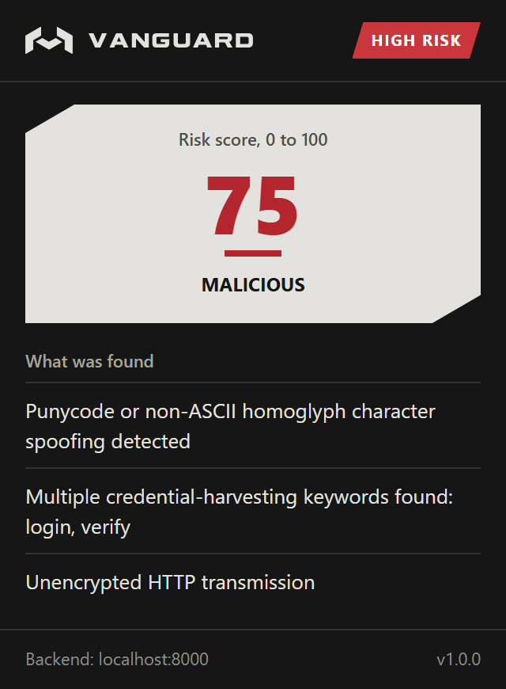
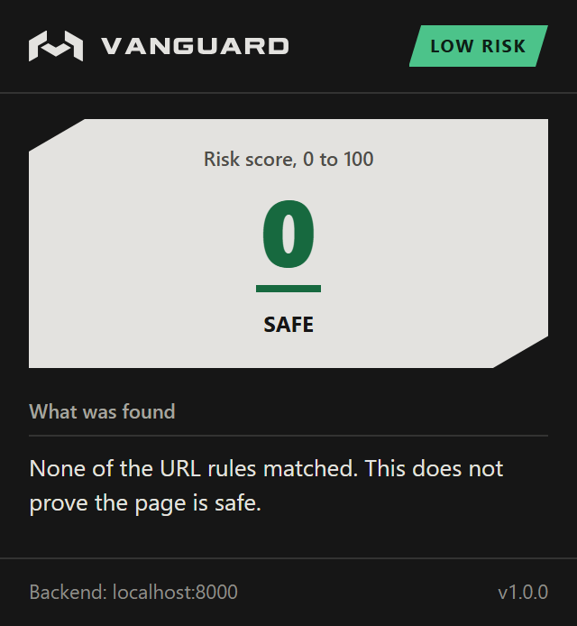
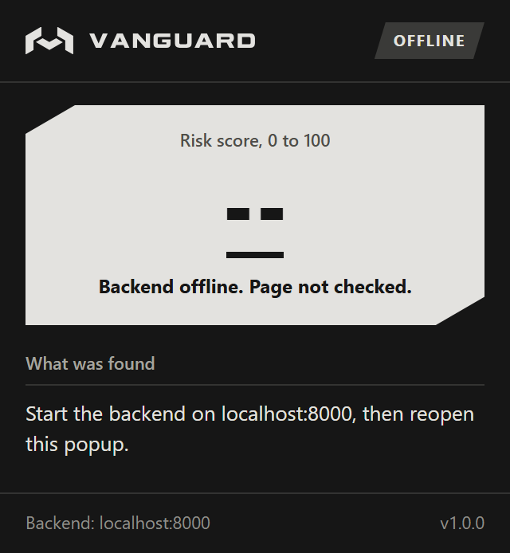

Read the address before you type the password.
Vanguard is a Chrome extension with a small Python service behind it. It scores the address of the page you're on against ten fixed rules and tells you which ones matched. The service runs on your own machine.
What the detector says
Pick an address. These are saved outputs of evaluate_url from the code in this repository, including one miss and one false alarm. This page doesn't scan anything live, and none of these links is opened.
How it works
-
The page loads
Once the page has loaded, the content script hands its address to the extension's service worker, which drops the
#fragment and masks any username or password. It checks only that address. It doesn't read the page's text or links. -
Your machine scores it
The worker posts the address to
localhost:8000/scan. The FastAPI service applies the rules, adds up the points and caps the total at 100. -
You get told
At 60 or more, a warning bar appears at the top of the page. Open the toolbar popup on any tab to see the score and the matched rules. The popup scans again each time you open it. If a page can't be checked, the toolbar icon shows
?.
The popup
Rendered in headless Chrome from the shipped popup files. The browser's tab lookup was stubbed to supply the sample address; scores come from a locally running backend.



Every rule, and what it's worth
The whole scoring model, as written in backend/detector.py. Points add up and stop at 100.
| Rule | Matches when | Points |
|---|---|---|
| Lookalike characters | After punycode is decoded, a hostname label mixes writing systems (Latin with Chinese, Japanese or Korean is allowed), is wholly Latin-looking Cyrillic or Greek, or imitates a listed brand. Punycode that doesn't decode also matches. | 45 |
| Internationalised name | Any other hostname with a punycode label (xn--) or a non-ASCII character. Not added on top of the rule above. | 15 |
| Brand name | The hostname contains paypal, apple, google, microsoft, amazon, netflix, chase, wellsfargo, bankofamerica, binance or coinbase, and its registrable domain isn't exactly that name on an accepted ending (.com, a listed co. or com. country ending, or .de .fr .it .es .nl .ca .in .ie .at .be .ch .se .pl). | 40 |
| IP address | The host is a bare IPv4 address. IPv6 isn't checked. | 35 |
| At sign | @ appears anywhere in the address. | 30 |
| Risky ending | The hostname ends in .xyz, .top, .buzz, .club, .work, .cfd, .sbs or .cam. | 20 |
| Sign-in words | The path or query contains at least two of: login, signin, verify, secure, update, banking, account, password, credential, auth, wallet, recover. | 20 |
| Random-looking host | The Shannon entropy of the hostname is above 4.2. | 20 |
| Deep subdomains | Three or more labels sit in front of the registrable domain. | 15 |
| No HTTPS | The address doesn't use https. An address sent without a scheme is treated as http. | 10 |
0 to 24: safe25 to 59: suspicious60 to 100: malicious
Where it falls short
Treat a low score as "no rule matched", never as "this site is fine".
- It only reads the address
- A phishing page on an ordinary-looking or hijacked domain will score low. There's no blocklist, reputation lookup or page analysis.
- The brand check is blunt
pineapple.comcontainsapple, so it's flagged, as are other domains the brands own.paypa1.comisn't. Brand names on accepted endings are trusted without an ownership check.- Short lookalike lists
- The lookalike letters and two-part endings are short built-in lists. IPv6 hosts aren't matched by the IP rule.
- It warns after loading
- Vanguard doesn't block navigation. The page has already loaded when the bar appears.
- Quiet when offline
- If the service isn't running, nothing appears in the page. The toolbar icon shows
?and the popup says the page wasn't checked. - Full addresses are sent locally
- Every web address, query string included, goes to
localhost:8000over plain HTTP. Fragments are removed and any username or password is masked. - No API authentication
- Browser access is limited to extensions and pages served from this machine, but other programs aren't restricted. Keep it bound to localhost.
Run it locally
1. Start the service
The repository and its folder are still named PhishGuard.
git clone https://github.com/harctik/PhishGuard.git
cd PhishGuard
python -m venv venv
venv\Scripts\activate # Windows
source venv/bin/activate # macOS, Linux
pip install -r requirements.txt
uvicorn backend.main:app --port 80002. Load the extension
Open chrome://extensions, turn on Developer mode, choose Load unpacked and select the extension folder.
API
GET /service name and versionGET /healthhealth checkPOST /scan{"url": "…"}POST /scan/bulk{"urls": […]}, up to 100 addresses of 8192 characters each